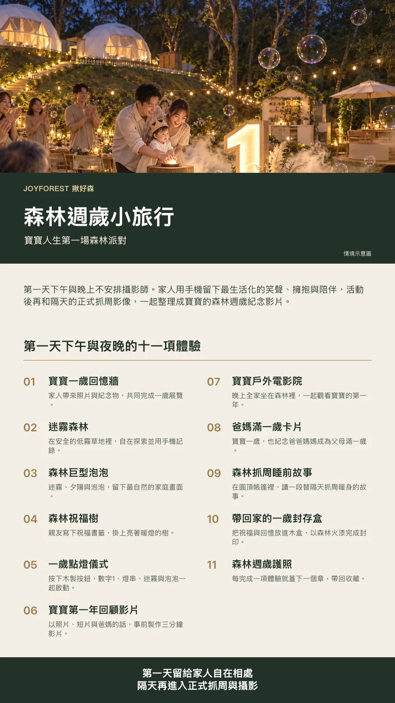

FIRST BIRTHDAY
室內可安排抓周儀式、蛋糕與家人聚餐，戶外可以散步、吹泡泡、看回憶影片。把週歲這一天留給真正重要的家人。

活動包場
使用時段為 15:00～24:00，20 人內都歡迎，停車空間可安排 6 台一般自小客車。
FIRST BIRTHDAY IDEAS
冷氣室內空間方便寶寶休息、換裝、進行抓周與家人用餐。
天候合適時可安排散步、泡泡、野餐與家人互動。
可透過 Apple TV、室內電視或戶外電影播放寶寶成長照片與家人祝福。
先熟悉環境、整理物品與準備儀式區。
依寶寶狀態進行抓周、祝福與慶生。
全家用餐、聊天並播放成長影片；22:00 後進入寧靜時段。
活動主要使用熱氣球冷氣室內活動空間與兩片草地，另一處室內空間會貼心保留作為臨時置物區。抓周道具、儀式用品、餐點與消耗品可以在預約時一起確認。